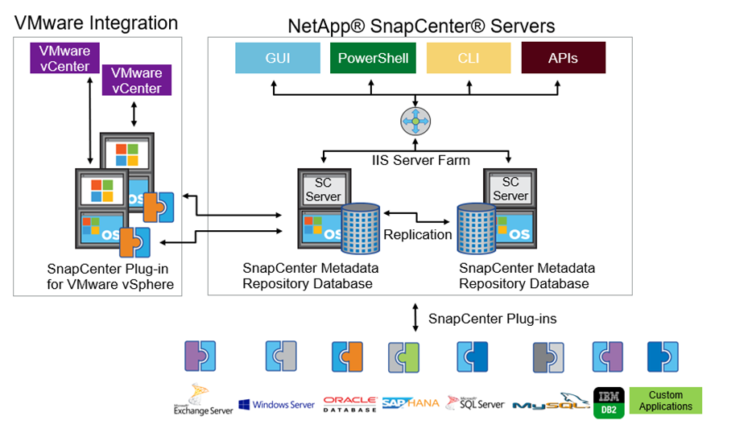

있습니다
기여자
FlexPod 아키텍처는 전체 컴퓨팅, 네트워크 및 스토리지 스택에서 구성 요소 또는 링크에 장애가 발생할 경우 고가용성을 제공하도록 설계되었습니다. 클라이언트 액세스 및 스토리지 액세스를 위한 다중 네트워크 경로는 로드 밸런싱과 최적의 리소스 사용률을 제공합니다.
다음 그림은 의료 영상 시스템 솔루션 구축을 위한 16Gb FC/40Gb 이더넷(40GbE) 토폴로지를 보여줍니다.

스토리지 아키텍처
이 섹션의 스토리지 아키텍처 지침을 사용하여 엔터프라이즈 의료 영상 시스템용 스토리지 인프라를 구성합니다.
제공합니다
일반적인 기업 의료 영상 환경은 여러 가지 스토리지 계층으로 구성됩니다. 각 계층에는 특정 성능 및 스토리지 프로토콜 요구사항이 있습니다. NetApp 스토리지는 다양한 RAID 기술을 지원합니다. 자세한 내용은 섹션을 참조하십시오 "여기". 다음은 NetApp AFF 스토리지 시스템이 이미징 시스템에 다양한 스토리지 계층의 요구사항을 지원하는 방법입니다.
-
* 성능 스토리지(계층 1). * 이 계층은 데이터베이스, OS 드라이브, VMware VMFS(Virtual Machine File System) 데이터 저장소 등을 위한 고성능 및 높은 중복성을 제공합니다. 블록 I/O는 ONTAP에 구성된 것처럼 파이버 케이블을 통해 SSD의 공유 스토리지 어레이로 이동합니다. 최소 지연 시간은 1ms~3ms이며 가끔 최대 5ms입니다. 이 저장 계층은 일반적으로 단기 저장 캐시에 사용되며, 일반적으로 온라인 DICOM 이미지에 대한 빠른 액세스를 위해 6 ~ 12개월의 이미지 저장 공간이 사용됩니다. 이 계층은 이미지 캐시, 데이터베이스 백업 등에 고성능 및 높은 중복성을 제공합니다. NetApp All-Flash 어레이는 지속적인 대역폭에서 1ms 미만의 지연 시간을 제공하며, 이는 일반적인 엔터프라이즈 의료 영상 환경에서 예상되는 서비스 시간보다 훨씬 짧습니다. NetApp ONTAP는 RAID-TEC(3중 패리티 RAID로 3개 디스크 장애 유지) 및 RAID DP(2개 디스크 장애를 지원하는 이중 패리티 RAID)를 모두 지원합니다.
-
* 아카이브 스토리지(계층 2). * 이 계층은 일반적인 비용 최적화 파일 액세스, 대용량 볼륨용 RAID 5 또는 RAID 6 스토리지, 장기간 저비용/성능 아카이빙에 사용됩니다. NetApp ONTAP는 RAID-TEC(3중 패리티 RAID로 3개 디스크 장애 유지) 및 RAID DP(2개 디스크 장애를 지원하는 이중 패리티 RAID)를 모두 지원합니다. FlexPod의 NetApp FAS는 NFS/SMB를 통해 SAS 디스크 어레이에 대한 이미징 애플리케이션 I/O를 지원합니다. NetApp FAS 시스템은 지속적인 대역폭에서 최대 10ms의 지연 시간을 제공하며, 이는 엔터프라이즈 의료 영상 시스템 환경에서 스토리지 계층 2에 필요한 서비스 시간보다 훨씬 짧습니다.
하이브리드 클라우드 환경의 클라우드 기반 아카이빙은 S3 또는 유사 프로토콜을 사용하는 퍼블릭 클라우드 스토리지 공급업체에 아카이빙하는 데 사용할 수 있습니다. NetApp SnapMirror 기술을 사용하면 All-Flash 또는 FAS 어레이에서 느린 디스크 기반 스토리지 어레이로 또는 Cloud Volumes ONTAP for AWS, Azure 또는 Google Cloud로 이미징 데이터를 복제할 수 있습니다.
NetApp SnapMirror는 통합 데이터 복제를 통해 의료 영상 시스템을 보호하는 업계 최고의 데이터 복제 기능을 제공합니다. 플래시, 디스크, 클라우드에 이르는 교차 플랫폼 복제를 통해 Data Fabric 전반에서 데이터 보호 관리를 단순화합니다.
-
데이터를 NetApp 스토리지 시스템 간에 원활하고 효율적으로 전송하여 동일한 타겟 볼륨 및 I/O 스트림으로 백업 및 재해 복구 기능을 모두 지원합니다.
-
보조 볼륨으로 페일오버 보조 스토리지의 특정 시점 Snapshot에서 복구
-
데이터 무손실 동기식 복제(RPO=0)를 사용하여 가장 중요한 워크로드를 보호합니다.
-
네트워크 트래픽 감소 효율적인 운영을 통해 스토리지 설치 공간을 축소
-
변경된 데이터 블록만 전송함으로써 네트워크 트래픽을 줄입니다.
-
중복제거, 압축, 컴팩션을 포함하여 전송 중에 운영 스토리지에서 스토리지 효율성 이점을 유지합니다.
-
네트워크 압축을 통해 추가적인 인라인 효율성 제공
자세한 내용은 을 참조하십시오 "여기".
아래 표에는 특정 지연 시간 및 처리량 성능 특성에 대해 일반적인 의료 영상 시스템에 필요한 각 계층이 나열되어 있습니다.
| 제공합니다 | 요구 사항 | 권장사항은 NetApp에서 제공합니다 |
|---|---|---|
1 |
지연 시간 35~500Mbps의 처리량 1~5ms |
지연 시간이 1ms 미만인 AFF A300 고가용성(HA) 2개와 디스크 쉘프 2개로 AFF에서는 최대 1.6GBps의 처리량을 처리할 수 있습니다 |
2 |
온프레미스 아카이브 |
최대 30ms의 지연 시간을 제공하는 FAS |
클라우드에 아카이브 |
NetApp StorageGRID 소프트웨어를 사용하여 Cloud Volumes ONTAP로 SnapMirror 복제 또는 백업 아카이브 |
스토리지 네트워크 연결
FC 패브릭
-
FC 패브릭은 컴퓨팅에서 스토리지로의 호스트 OS I/O를 위한 것입니다.
-
FC 패브릭 2개(패브릭 A 및 패브릭 B)는 각각 Cisco UCS 패브릭 A 및 UCS 패브릭 B에 연결됩니다.
-
FC 논리 인터페이스(LIF) 2개가 있는 SVM(스토리지 가상 머신)은 각 컨트롤러 노드에 있습니다. 각 노드에서 한 LIF는 패브릭 A에 연결되고 다른 LIF는 패브릭 B에 연결됩니다
-
16Gbps FC 엔드 투 엔드 접속은 Cisco MDS 스위치를 통해 이루어집니다. 단일 이니시에이터, 여러 타겟 포트 및 조닝이 모두 구성됩니다.
-
FC SAN 부트는 상태 비저장 컴퓨팅을 생성하는 데 사용됩니다. 서버는 AFF 스토리지 클러스터에서 호스팅되는 부팅 볼륨의 LUN에서 부팅됩니다.
iSCSI, NFS 및 SMB/CIFS를 통한 스토리지 액세스를 위한 IP 네트워크
-
각 컨트롤러 노드의 SVM에는 2개의 iSCSI LIF가 있습니다. 각 노드에서 하나의 LIF가 패브릭 A에 연결되고 두 번째 LIF는 패브릭 B에 연결됩니다
-
각 컨트롤러 노드의 SVM에 2개의 NAS 데이터 LIF가 있습니다. 각 노드에서 하나의 LIF가 패브릭 A에 연결되고 두 번째 LIF는 패브릭 B에 연결됩니다
-
스위치 N9k-A에 대한 10Gbps 링크 및 스위치 N9k-B에 대한 10Gbps 링크에 대한 스토리지 포트 인터페이스 그룹(가상 포트 채널[vPC]
-
VM에서 스토리지까지 ext4 또는 NTFS 파일 시스템의 워크로드:
-
IP를 통한 iSCSI 프로토콜.
-
-
NFS 데이터 저장소에서 호스팅되는 VM:
-
VM OS I/O는 Nexus 스위치를 통해 여러 이더넷 경로를 통과합니다.
-
대역 내 관리(액티브-패시브 결합)
-
관리 스위치 N9k-A에 대한 1Gbps 링크 및 관리 스위치 N9k-B에 대한 1Gbps 링크
백업 및 복구
FlexPod 데이터 센터는 NetApp ONTAP 데이터 관리 소프트웨어에서 관리하는 스토리지 어레이를 기반으로 합니다. ONTAP 소프트웨어는 20년 이상 발전을 거듭하여 VM, Oracle 데이터베이스, SMB/CIFS 파일 공유 및 NFS에 다양한 데이터 관리 기능을 제공합니다. NetApp Snapshot 기술, SnapMirror 기술, NetApp FlexClone 데이터 복제 기술과 같은 보호 기술도 제공합니다. NetApp SnapCenter 소프트웨어에는 VM, SMB/CIFS 파일 공유, NFS, Oracle 데이터베이스 백업 및 복구를 위한 ONTAP Snapshot, SnapRestore 및 FlexClone 기능을 사용할 수 있는 서버 및 GUI 클라이언트가 있습니다.
NetApp SnapCenter 소프트웨어는 "특허 획득" Snapshot 기술: NetApp 스토리지 볼륨에서 전체 VM 또는 Oracle 데이터베이스의 백업을 즉시 생성합니다. Oracle RMAN(Recovery Manager)과 비교할 때 Snapshot 복사본은 블록의 물리적 복사본으로 저장되지 않으므로 전체 기본 백업 복사본이 필요하지 않습니다. 스냅샷 복사본은 스냅샷 복사본이 생성될 때 ONTAP WAFL 파일 시스템에 존재했던 스토리지 블록에 대한 포인터로 저장됩니다. 이처럼 밀접한 물리적 관계로 인해 Snapshot 복사본은 원래 데이터와 동일한 스토리지 어레이에 유지됩니다. 파일 레벨에서 스냅샷 복사본을 생성하여 백업에 대한 세부적인 제어를 제공할 수도 있습니다.
스냅샷 기술은 쓰기 시 리디렉션 기술을 기반으로 합니다. 처음에는 메타데이터 포인터만 포함하고 스토리지 블록으로 첫 번째 데이터가 변경될 때까지 공간을 많이 사용하지 않습니다. 스냅샷 복사본에 의해 기존 블록이 잠겨 있는 경우 ONTAP WAFL 파일 시스템이 새 블록을 액티브 복사본으로 기록합니다. 이 방식을 사용하면 쓰기 시 변경 기술에서 발생하는 이중 쓰기를 방지할 수 있습니다.
Oracle 데이터베이스 백업의 경우 Snapshot 복사본을 사용하면 시간을 크게 절약할 수 있습니다. 예를 들어, RMAN만 사용하여 완료하는 데 26시간이 걸리는 백업에는 SnapCenter 소프트웨어를 사용하는 데 2분도 걸리지 않습니다.
또한 데이터 복원으로 데이터 블록을 복사하는 것이 아니라 스냅샷 복사본이 생성될 때 애플리케이션 정합성이 보장된 스냅샷 블록 이미지에 대한 포인터를 대칭 이동하면 스냅샷 백업 복사본을 거의 즉시 복원할 수 있습니다. SnapCenter 클론 복제에서는 기존 스냅샷 복사본에 대한 메타데이터 포인터의 개별 복사본을 만들고 새 복사본을 타겟 호스트에 마운트합니다. 또한 이 프로세스는 빠르고 스토리지 효율성도 뛰어납니다.
다음 표에는 Oracle RMAN과 NetApp SnapCenter 소프트웨어의 주요 차이점이 요약되어 있습니다.
| 백업 | 복원 | 복제 | 전체 백업 필요 | 공간 사용 | 오프 사이트 카피 | |
|---|---|---|---|---|---|---|
RMAN |
느림 |
느림 |
느림 |
예 |
높음 |
예 |
SnapCenter |
빠릅니다 |
빠릅니다 |
빠릅니다 |
아니요 |
낮음 |
예 |
다음 그림은 SnapCenter 아키텍처를 보여 줍니다.

NetApp MetroCluster 구성은 전 세계 수천 개의 기업에서 고가용성(HA), 데이터 무손실, 무중단 운영을 데이터 센터 내외부에서 사용합니다. MetroCluster는 서로 다른 위치 또는 장애 도메인에 있는 두 ONTAP 클러스터 간에 데이터와 구성을 동기식으로 미러링하는 ONTAP 소프트웨어의 무료 기능입니다. MetroCluster는 두 가지 목표, 즉 클러스터에 기록된 데이터를 동기식으로 미러링함으로써 RPO(복구 시점 목표 없음)를 자동으로 처리하여 애플리케이션에 대해 지속적으로 사용 가능한 스토리지를 제공합니다. 구성을 미러링하고 두 번째 사이트의 데이터에 대한 액세스를 자동화하여 RTO(복구 시간 목표)가 거의 필요하지 않습니다. MetroCluster는 두 사이트에 있는 두 독립 클러스터 간에 데이터와 구성을 자동으로 미러링하여 단순화를 제공합니다. 스토리지가 한 클러스터 내에서 프로비저닝되면 두 번째 사이트의 두 번째 클러스터에 자동으로 미러링됩니다. NetApp SyncMirror 기술은 RPO가 0인 모든 데이터의 전체 복사본을 제공합니다. 따라서 한 사이트의 워크로드는 언제든지 다른 사이트로 전환하고 데이터 손실 없이 데이터를 계속 제공할 수 있습니다. 자세한 내용은 을 참조하십시오 "여기".
네트워킹
Cisco Nexus 스위치 쌍은 컴퓨팅에서 스토리지로의 IP 트래픽 및 의료 영상 시스템 이미지 뷰어의 외부 클라이언트에 대한 중복 경로를 제공합니다.
-
포트 채널과 vPC를 사용하는 Link Aggregation이 전체적으로 채택되어 더 높은 대역폭과 고가용성을 위한 설계가 가능합니다.
-
VPC는 NetApp 스토리지 어레이와 Cisco Nexus 스위치 간에 사용됩니다.
-
VPC는 Cisco UCS 패브릭 인터커넥트와 Cisco Nexus 스위치 간에 사용됩니다.
-
각 서버에는 vNIC(Virtual Network Interface Card)가 있으며, 통합 패브릭과의 중복 연결이 가능합니다. NIC 페일오버는 이중화를 위해 Fabric 상호 연결 간에 사용됩니다.
-
각 서버에는 vHBA(Virtual Host Bus Adapter)가 있으며, 통합 패브릭과 이중화된 접속이 가능합니다.
-
-
Cisco UCS 패브릭 상호 연결은 권장 사항에 따라 최종 호스트 모드로 구성되어 업링크 스위치에 vNIC를 동적으로 고정할 수 있습니다.
-
FC 스토리지 네트워크는 한 쌍의 Cisco MDS 스위치를 통해 제공됩니다.
컴퓨팅 - Cisco Unified Computing System
서로 다른 패브릭 인터커넥트를 통해 제공되는 2개의 Cisco UCS 패브릭은 2개의 장애 도메인을 제공합니다. 각 패브릭은 IP 네트워킹 스위치 및 다른 FC 네트워킹 스위치에 모두 연결됩니다.
VMware ESXi를 실행하기 위한 FlexPod 모범 사례에 따라 각 Cisco UCS 블레이드에 동일한 서비스 프로필이 생성됩니다. 각 서비스 프로필에는 다음 구성 요소가 있어야 합니다.
-
NFS, SMB/CIFS 및 클라이언트 또는 관리 트래픽을 전달하는 vNIC 2개(각 Fabric에 1개
-
NFS, SMB/CIFS 및 클라이언트 또는 관리 트래픽용 vNIC에 필요한 추가 VLAN
-
iSCSI 트래픽을 전달하는 vNIC 2개(각 Fabric에 1개
-
스토리지에 대한 FC 트래픽을 위한 스토리지 FC HBA 2개(각 패브릭에 1개씩
-
SAN 부팅
포함되었습니다
VMware ESXi 호스트 클러스터는 워크로드 VM을 실행합니다. 클러스터는 Cisco UCS 블레이드 서버에서 실행되는 ESXi 인스턴스로 구성됩니다.
각 ESXi 호스트에는 다음과 같은 네트워크 구성 요소가 포함됩니다.
-
FC 또는 iSCSI를 통해 SAN 부팅
-
NetApp 스토리지에서 LUN 부팅(부팅 OS용 전용 FlexVol)
-
NFS, SMB/CIFS 또는 관리 트래픽을 위한 VMNIC(Cisco UCS vNIC) 2개
-
스토리지에 대한 FC 트래픽을 위한 2개의 스토리지 HBA(Cisco UCS FC vHBA
-
표준 스위치 또는 분산 가상 스위치(필요에 따라)
-
워크로드 VM용 NFS 데이터 저장소
-
관리, 클라이언트 트래픽 네트워크 및 VM용 스토리지 네트워크 포트 그룹
-
각 VM에 대한 관리, 클라이언트 트래픽 및 스토리지 액세스(NFS, iSCSI 또는 SMB/CIFS)를 위한 네트워크 어댑터
-
VMware DRS가 활성화되었습니다
-
기본 다중 경로가 스토리지에 대한 FC 또는 iSCSI 경로에 대해 활성화되었습니다
-
VM에 대한 VMware 스냅샷이 꺼져 있습니다
-
VM 백업을 위해 VMware에 구축된 NetApp SnapCenter
의료 영상 시스템 아키텍처
의료 조직에서 의료 영상 시스템은 중요한 애플리케이션이며 환자 등록부터 시작하여 수익 주기 동안 청구 관련 활동으로 끝나는 임상 워크플로우에 제대로 통합됩니다.
다음 다이어그램은 일반적인 대형 병원에 관련된 다양한 시스템을 보여 줍니다. 이 다이어그램은 일반적인 의료 영상 시스템의 아키텍처 구성 요소를 확대하기 전에 의료 영상 시스템에 구조적 컨텍스트를 제공하기 위한 것입니다. 워크플로는 매우 다양하며 병원과 사용 사례별로 다릅니다.
아래 그림은 환자, 지역 병원 및 대형 병원의 맥락에서 의료 영상 시스템을 보여줍니다.

-
환자는 증상이 있는 지역 클리닉을 방문합니다. 상담 중에 커뮤니티 의사는 HL7 주문 메시지 형식으로 더 큰 병원으로 전송되는 영상 순서를 지정합니다.
-
커뮤니티 주치의 EHR 시스템은 대형 병원으로 HL7 ORDER/ORD 메시지를 전송합니다.
-
엔터프라이즈 상호 운용성 시스템(ESB(Enterprise Service Bus)라고도 함)은 주문 메시지를 처리하여 EHR 시스템에 주문 메시지를 보냅니다.
-
EHR은 주문 메시지를 처리합니다. 환자 레코드가 없으면 새 환자 레코드가 생성됩니다.
-
EHR은 의료 영상 시스템에 영상 주문을 전송합니다.
-
환자가 대형 병원에 영상 촬영을 위해 전화합니다.
-
영상 촬영 접수 및 등록 데스크는 방사선 정보 또는 유사한 시스템을 사용하여 영상 촬영 예약을 위해 환자를 예약합니다.
-
환자가 영상 촬영 예약을 위해 도착하고 영상 또는 비디오가 생성되어 PACS로 전송됩니다.
-
방사선과 전문의는 하이엔드/GPU 그래픽 지원 진단 뷰어를 사용하여 이미지를 읽고 PACS의 영상에 주석을 추가합니다. 특정 이미징 시스템에는 인공 지능(AI) 지원 효율성 향상 기능이 이미징 워크플로우에 내장되어 있습니다.
-
이미지 주문 결과는 ESB를 통해 HL7 ORU 메시지를 통해 오더 결과 형식으로 EHR에 전송됩니다.
-
EHR은 주문 결과를 환자 기록에 처리하고 컨텍스트 인식 링크를 통해 축소판 이미지를 실제 DICOM 이미지에 배치합니다. 의사는 EHR 내에서 고해상도 이미지가 필요한 경우 진단 뷰어를 실행할 수 있습니다.
-
의사는 영상을 검토하고 환자 기록에 의사 메모를 입력합니다. 의사는 임상 결정 지원 시스템을 사용하여 검토 프로세스를 개선하고 환자에 대한 적절한 진단을 도울 수 있습니다.
-
그런 다음 EHR 시스템은 주문 결과를 커뮤니티 병원에 주문 결과 메시지 형식으로 전송합니다. 이때 커뮤니티 병원이 전체 영상을 수신할 수 있으면 WADO 또는 DICOM을 통해 영상이 전송됩니다.
-
커뮤니티 의사는 진단을 완료하고 환자에게 다음 단계를 제공합니다.
일반적인 의료 영상 시스템은 N-계층형 아키텍처를 사용합니다. 의료 영상 시스템의 핵심 구성 요소는 다양한 애플리케이션 구성 요소를 호스팅하는 애플리케이션 서버입니다. 일반적인 응용 프로그램 서버는 Java 런타임 기반 또는 C#.Net CLR 기반 서버입니다. 대부분의 엔터프라이즈 의료 영상 솔루션은 Oracle Database Server 또는 MS SQL Server 또는 Sybase를 기본 데이터베이스로 사용합니다. 또한 일부 기업 의료 영상 시스템은 지리적 지역에 대한 콘텐츠 가속화 및 캐싱에 데이터베이스를 사용합니다. 일부 엔터프라이즈 의료 영상 시스템은 또한 DICOM 인터페이스 및/또는 API용 엔터프라이즈 통합 서버와 함께 MongoDB, Redis 등의 NoSQL 데이터베이스를 사용합니다.
일반적인 의료용 영상 시스템은 두 가지 사용자 세트(진단 사용자/방사선과 전문의 또는 영상을 주문한 임상의나 의사)에 대한 영상에 대한 액세스를 제공합니다.
방사선 전문의는 일반적으로 물리적 또는 가상 데스크톱 인프라의 일부인 하이엔드 컴퓨팅 및 그래픽 워크스테이션에서 실행 중인 하이엔드 그래픽 지원 진단 뷰어를 사용합니다. 가상 데스크톱 인프라 구축을 시작하려는 경우 자세한 정보를 확인할 수 있습니다 "여기".
허리케인 카트리나가 루이지애나의 주요 교육 병원 중 2곳을 파괴했을 때, 리더들이 모여 사상 최대 3000개 이상의 가상 데스크톱을 포함한 탄력적인 전자 의료 기록 시스템을 구축했습니다. 사용 사례 참조 아키텍처 및 FlexPod 참조 번들에 대한 자세한 내용은 를 참조하십시오 "여기".
임상의는 다음 두 가지 주요 방법으로 이미지에 액세스합니다.
-
* 웹 기반 액세스. * 이는 일반적으로 EHR 시스템에서 PACS 이미지를 환자의 전자 의료 기록(EMR)에 컨텍스트 인식 링크로 내장하고, 이미지 워크플로우, 절차 워크플로우, 진행 노트 워크플로우 등에 배치할 수 있는 링크를 포함하는 데 사용됩니다. 웹 기반 링크는 환자 포털을 통해 환자에 대한 이미지 액세스를 제공하는 데도 사용됩니다. 웹 기반 액세스는 컨텍스트 인식 링크라는 기술 패턴을 사용합니다. 컨텍스트 인식 링크는 DICOM 미디어에 대한 정적 링크/URI가 될 수도 있고 사용자 지정 매크로를 사용하여 동적으로 생성된 링크/URI가 될 수도 있습니다.
-
* Thick client. * 일부 기업 의료 시스템에서는 두꺼운 클라이언트 기반 접근 방식을 사용하여 이미지를 볼 수도 있습니다. 환자의 EMR 내에서 또는 독립 실행형 애플리케이션으로 씩 클라이언트를 시작할 수 있습니다.
의료 영상 시스템은 의사 커뮤니티 또는 CIN 참여 의사에게 영상 액세스를 제공할 수 있습니다. 일반적인 의료 영상 시스템에는 의료 조직 내부 및 외부의 다른 의료 IT 시스템과의 이미지 상호 운용성을 지원하는 구성 요소가 포함되어 있습니다. 커뮤니티 의사는 웹 기반 애플리케이션을 통해 이미지에 액세스하거나 이미지 상호 운용성을 위해 이미지 교환 플랫폼을 활용할 수 있습니다. 영상 교환 플랫폼은 일반적으로 WADO 또는 DICOM을 기본 영상 교환 프로토콜로 사용합니다.
의료 영상 시스템은 교실에서 사용할 PACS 또는 영상 시스템이 필요한 교육 의료 센터도 지원할 수 있습니다. 학술 활동을 지원하기 위해, 일반적인 의료 영상 시스템은 보다 작은 설치 공간 또는 교육 전용 영상 환경에서 PACS 시스템의 기능을 가질 수 있습니다. 일반적인 벤더 중립적 보관 시스템과 일부 엔터프라이즈급 의료 영상 시스템은 교육 목적으로 사용되는 영상을 익명화할 수 있는 DICOM 영상 태그 변형 기능을 제공합니다. 태그 모핑은 의료 기관이 서로 다른 공급업체의 의료 영상 시스템 간에 공급업체 중립적인 방식으로 DICOM 이미지를 교환할 수 있도록 합니다. 또한 태그 모르핑은 의료 영상 시스템이 의료 영상을 위한 기업 차원의 벤더 중립적 보관 기능을 구현할 수 있게 해줍니다.
의료 영상 시스템이 사용하기 시작했습니다 "GPU 기반 컴퓨팅 기능" 이미지를 사전 처리하여 효율성을 개선하여 인간 워크플로우를 개선합니다. 일반적인 기업 의료 영상 시스템은 업계 최고의 NetApp 스토리지 효율성 기능을 활용합니다. 엔터프라이즈 의료 영상 시스템은 일반적으로 백업, 복구 및 복원 작업에 RMAN을 사용합니다. 성능을 향상하고 백업을 생성하는 데 걸리는 시간을 줄이기 위해 스냅샷 기술을 백업 작업에 사용할 수 있으며 SnapMirror 기술을 복제에 사용할 수 있습니다.
아래 그림은 계층화된 아키텍처 보기의 논리적 애플리케이션 구성 요소를 보여 줍니다.

아래 그림은 물리적 애플리케이션 구성 요소를 보여줍니다.

논리적 애플리케이션 구성요소를 사용하려면 인프라에서 다양한 프로토콜 및 파일 시스템을 지원해야 합니다. NetApp ONTAP 소프트웨어는 업계 최고의 프로토콜 및 파일 시스템 세트를 지원합니다.
아래 표에는 애플리케이션 구성 요소, 스토리지 프로토콜 및 파일 시스템 요구 사항이 나와 있습니다.
| 응용 프로그램 구성 요소 | SAN/NAS | 파일 시스템 유형입니다 | 제공합니다 | 복제 유형입니다 |
|---|---|---|---|---|
VMware 호스트 운영 DB |
로컬 |
산 |
VMFS를 참조하십시오 |
계층 1 |
응용 프로그램 |
VMware 호스트 운영 DB |
반복 |
산 |
VMFS를 참조하십시오 |
계층 1 |
응용 프로그램 |
VMware 호스트 운영 애플리케이션 |
로컬 |
산 |
VMFS를 참조하십시오 |
계층 1 |
응용 프로그램 |
VMware 호스트 운영 애플리케이션 |
반복 |
산 |
VMFS를 참조하십시오 |
계층 1 |
응용 프로그램 |
핵심 데이터베이스 서버 |
산 |
ext4 |
계층 1 |
응용 프로그램 |
백업 데이터베이스 서버 |
산 |
ext4 |
계층 1 |
없음 |
이미지 캐시 서버 |
NAS |
SMB/CIFS |
계층 1 |
없음 |
보관 서버 |
NAS |
SMB/CIFS |
계층 2 |
응용 프로그램 |
웹 서버 |
NAS |
SMB/CIFS |
계층 1 |
없음 |
WADO 서버 |
산 |
NFS 를 참조하십시오 |
계층 1 |
응용 프로그램 |
비즈니스 인텔리전스 서버 |
산 |
NTFS입니다 |
계층 1 |
응용 프로그램 |
비즈니스 인텔리전스 백업 |
산 |
NTFS입니다 |
계층 1 |
응용 프로그램 |
상호 운용성 서버 |
산 |
ext4 |
계층 1 |
응용 프로그램 |
상호 운용성 데이터베이스 서버 |
 문서 변경 요청
문서 변경 요청 이 페이지 편집
이 페이지 편집 기여하는 방법 자세히 알아보기
기여하는 방법 자세히 알아보기